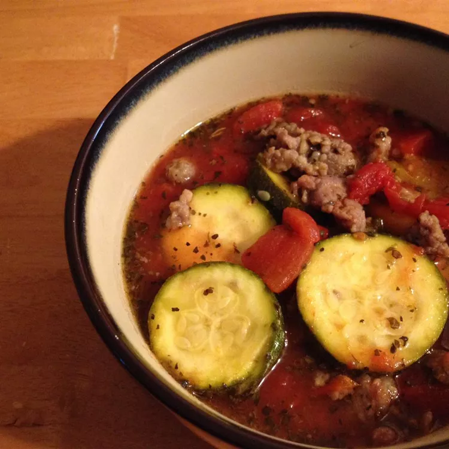

Slow Cooker Zucchini Soup

This is great as thick soup served with French bread or served over rice
or noodles. Better the next day!
-
Heat a large skillet over medium-high heat. Cook and stir sausage in the
hot skillet until browned and crumbly, 5 to 7 minutes; drain and discard
grease. Mix celery into cooked sausage; cook and stir until celery is
softened, about 10 minutes.
-
Combine sausage mixture, zucchini, tomatoes, bell peppers, onion, salt,
sugar, oregano, Italian seasoning, basil, and garlic powder in a slow
cooker.
-
Cook on Low for 4 to 6 hours. Garnish each serving with 1 tablespoon
Parmesan cheese.